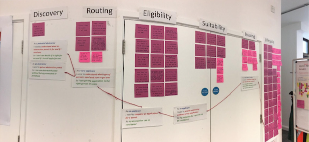

Our Environment Agency multidisciplinary agile team, was tasked with working closely with the operational and functional teams to redesign the water abstraction licencing service. This was whilst ensuring continued current operations and in the context of a large scale policy change.
As the Senior User Experience Designer in the team, I was responsible for creating and overseeing the interaction and service design for the service. I worked closely with the designers of connecting services and programmes to coordinate a strategic cross-services design.
The agile service team was funded to work with a cross section of operational teams and stakeholders to expand the paper processes of water abstraction and impoundment licenses to;
The pot of funding was based on business requirements, with a delivery timeline tied in to an evolving large scale policy roll out.
Reframing the task
As a team we were keen to move away from the project funded narrative of ‘digitising a paper journey’. It was important that we were bringing the teams and stakeholders with us on a journey of service transformation.
We reframed the context of the work as a service redesign that would focus on a user-centred end-to-end journey, enabled by a simpler set of systems and processes within the organisation.
The problem
Physical paper documents accompanied by CDs or USB sticks for large digital files were couriered to the Environment Agency to ensure traceability of sent files and documents. This would come at a travel carbon cost. The file sizes were not able to be restricted through this process and would mean that the files were often not compressed and could be quite large. This would come at a carbon cost through additional data storage.
The overrunning processing times would cause extra web traffic to the service, and calls and emails to the staff, which would need to be recorded and tracked on the online workflow system, and would all come at a further carbon cost as well as efficiency cost.A large policy change was planned to the way license holders were going to be accountable for their water usage. There was also going to be a change to the amount of water abstractors would be able to use. This created a lot of friction in the attitudes to the service from our users. Users were confused about what this change meant for them.
The policy changes were also setting out a fast developing landscape for operational teams to both operate in, and work closely with the service transformation teams on. This increased already existing tensions within the organisation’s operational teams towards change.Discovery As a team we went into an extensive discovery process, researching our users and their needs. We conducted interviews with both our citizen users, our subject matter experts, operational staff, and various stakeholders. This enabled us to ensure our direction was user-centred not funding led, whilst meeting the needs of the organisation.
As a team we went into an extensive discovery process, researching our users and their needs. We conducted interviews with both our citizen users, our subject matter experts, operational staff, and various stakeholders. This enabled us to ensure our direction was user-centred not funding led, whilst meeting the needs of the organisation.
I created design artifacts to help visualise the landscape, it’s challenges and opportunities. Visuals I created included:
The service ecosystem helped us discover users that were struggling with even the seemingly smallest of license management tasks, for instance changing personal details, or providing digital documentation. I was then able to map out the service touch points around the identified tasks using the journey maps, identifying the specific pain points and opportunities. The pain points and opportunities would then go into the service blueprint which framed the journey within the larger service and various systems that it comprised of.
By the end of our discovery, the various design artifacts visualizing our body of research, clearly demonstrated the need for a more simple, cross channel, joined up and faster service. An online platform for the user to manage licenses, would free up resources within the organisation, whilst offering a more responsive service for users. It would also create an opportunity to simplify abstraction reform for the user, and guide them through any changes when they were rolled out.
Alpha I started the design process with ideation sessions, codesign workshops and regular design crits.
I facilitated ideation and codesign sessions with our agile team and subject matter experts. In the ideation sessions we brainstormed various design problems, and sketched out different approaches, challenging our assumptions.
I took ideas from the ideation sessions to further work on through a mixture of codesign and collaborative design.
For the design process I worked in user stories, designed to meet user needs, and business requirements. I created to-be journey maps and user flows, wireframes and rapid prototypes.
I started with creating a high number of low fidelity paper prototypes for the first few sprints. I then moved to building higher fidelity prototypes in code, using the Gov UK Design System to create a fully interactive experience for the users to try out the designs we’d created. I would iterate the design each sprint, based on user needs or design issues learnt in usability testing and research.
The design work for water abstraction and impounded licenses resulted in:
For citizens, the ability to:
For Environment Agency staff:
Overall: